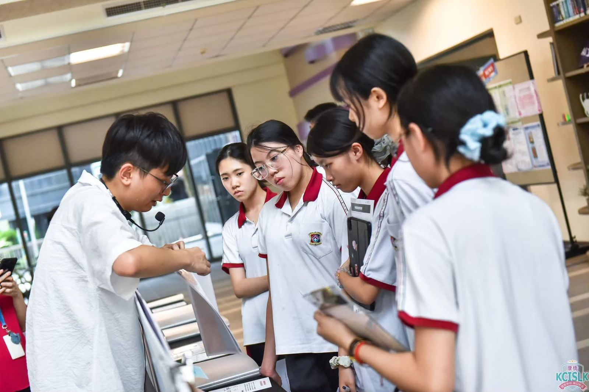
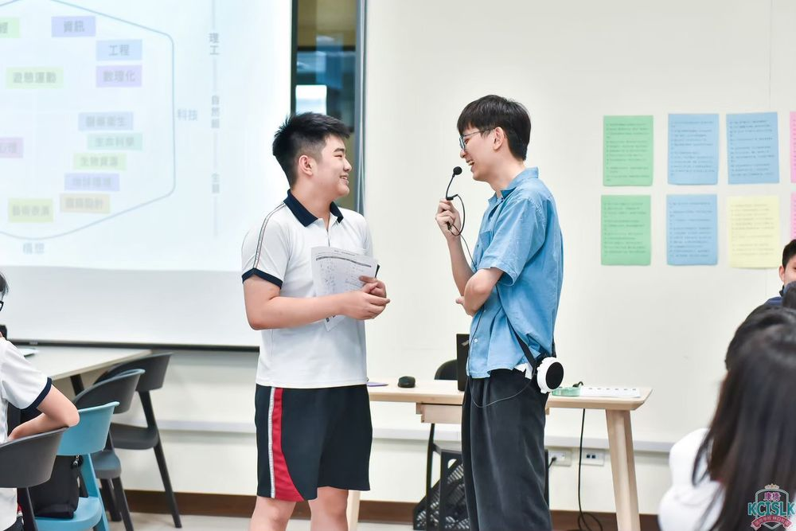

招生資料載入失敗，可能是網路不穩。請稍後再試。

找出值得先探索的學群。

身為教育工作者，我希望每位學生都能走出自己的精彩人生，把時間花在自己感興趣、值得努力的事情上。
我是一位中學公民科教師，自學程式設計，希望透過這個網站，陪學生把升學的選擇看得更清楚。你的支持，讓這份課堂外的陪伴持續下去。
每一份支持，都用在這裡
贊助功能尚未開放。
單次自由贊助，金額於付款平台填寫。付款、交易紀錄及相關聯絡方式請於平台確認。